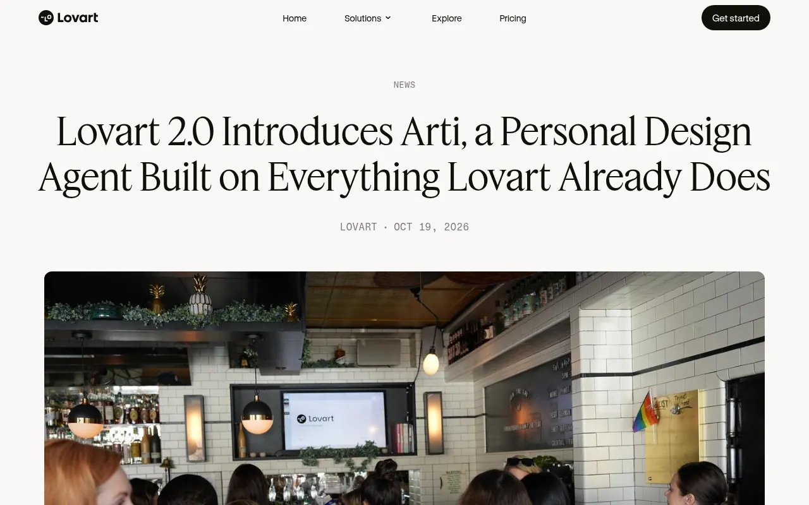
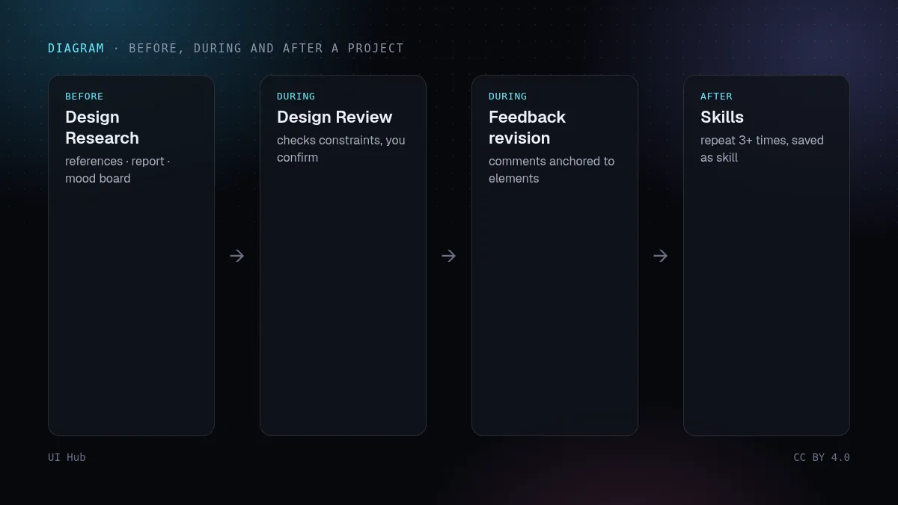
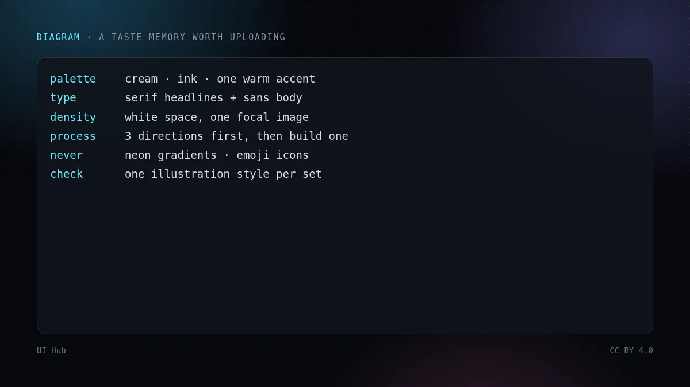

10 月 19 日，Lovart 发布了设计智能体 2.0 版本，核心是一个叫 Arti 的个人设计智能体。卖点不是更强的出图模型，Lovart 本来就接入了多家第三方的图像和视频模型。变化在生成之外：Arti 会记住你的工作方式，能按计划接下整件活，开工前先做调研，干活时在后台检查画布。它很好地说明了设计智能体正在往哪走，也说明了要放心把真活交给它之前，你得先写清楚什么。


同一天还有两项较小的发布，方向一致。Gemini Notebook 给幻灯片和视频概览加了一个 Review 开关，可以在任何内容渲染之前先看、先改大纲或制作说明。Automo 的设计引擎加入了一个「创意总监」评审，会看多个渲染好的候选稿，只留下最强的那张；你的点赞和点踩也会精确对应到你评价的那一稿。放在一起看，规律很清楚：价值正在从「生成」转向另外三步——记住这个人喜欢什么，在花算力之前先给出方案，用训练数据平均值以外的标准来评判结果。
记忆的质量取决于里面写了什么。如果记忆里只有一句模糊的「我喜欢简洁现代」，结果就和模糊的提示一样平庸，而且会出现在每一个项目里。Lovart 公告里最有用的一句，其实是它自己举的记忆示例：先给三个明显不同的方向，等我选定一个再做全套。这是一条流程规则，而流程规则恰恰是智能体最能遵守的。对待记忆面板，就像对待规范文件一样：短、具体、可检验。设计检查值得期待也是同样的道理：一致性检查需要明确的约束才能对照，所以要在项目一开始就写下来，而不是指望智能体自己猜。
真正的风险在委托。一个每周悄悄跑偏品牌的定时任务，比没有任务更糟。Lovart 给的护栏（试跑、积分上限、结果放在单独的画布页、运行历史、随时暂停）方向是对的，每一项都应该用上。
# taste.md（作为记忆上传）
配色：奶油白 #f6f1e7 · 墨色 #1d1a16 · 只有一个强调色，暖棕 #8a5a3b
字体：衬线标题 + 中性无衬线正文；最多两种字重
疏密：留白充足；每个版面只有一个视觉焦点
流程：先给 3 个明显不同的方向，再把选中的做完整
禁止：霓虹渐变 · 图库 3D 软泡 · 用 emoji 当图标 · 文字压在杂乱照片上
检查：每一帧插画风格一致 · Logo 安全区 ≥ 1 倍大写字母高度
如果要从零写这份审美文件，可以从 UI Hub 设计百科 里的风格笔记和规范起步，再看我们之前那篇教智能体审美。无论智能体是 Lovart、Claude、Cursor 还是 Figma 的，格式都一样：先写短规则，再出像素。